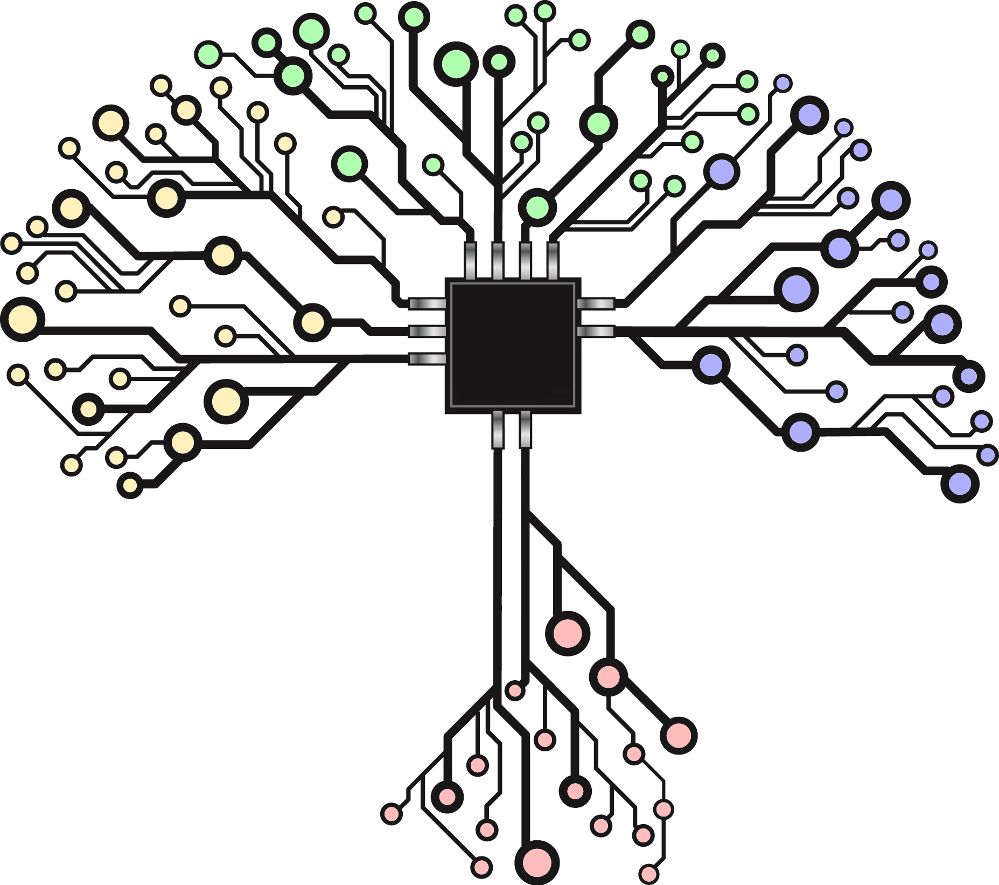

Product: Visual Catalogs

Get app installs?
Growing monthly active users?
How do you users check notifications on their phone?
What innovations can improve user shopping experience?
How do you acquire and afford leading-edge display technology?
Create a Novel and Engaging User Experience
How do you close the gap between the physical and digital shopping experience?
A catalog-driven virtual reality experience on mobile Spatially arrange and display your products Displays can automatically be updated from your promotion catalog Ability to create catalog-based and event-based displays Event-based display can be used to generate new business Visualizations allow for user participation
Growing monthly active users?
How do you users check notifications on their phone?
What innovations can improve user shopping experience?
How do you acquire and afford leading-edge display technology?
Create a Novel and Engaging User Experience
How do you close the gap between the physical and digital shopping experience?
A catalog-driven virtual reality experience on mobile Spatially arrange and display your products Displays can automatically be updated from your promotion catalog Ability to create catalog-based and event-based displays Event-based display can be used to generate new business Visualizations allow for user participation
Service: Sheets Pipeline
Conceptually break down what the app does - once you’re set up, a lot of resue
List of assets (3D mesh library)
Layout - store design
Living room layout for furniture
Stadium for Book Store
Catalog (3D assets + product data + bin data)
distinguishes an asset into a specific product
Example: 3D Grape + Coloration + Price,
Position, Size etc = Concord,
Champagne, or Riesling
How is content continually generated?
Make layouts that represent the store
Assets come from a 3D library and are added over time
Updated catalogs can be manually or automatically generated into a virtual scene
How is this integrated into my existing system?
Stand alone application that can be redirected
Overlay over existing application
Consoles: Interact synchronously with all devices

If you need a platform to get the most out of multiple screen options to deliver lots of video that is driven by user choice you've found the place!
Using a mix of platforms at the same time with synchronized content allows people in different rooms and different places to share the same experience. Using a realtime data source (with push capability) like Firebase allows us to efficently push indexed content changes to TV applications in addition to rapidly synchronizing screens and choices amongst users.